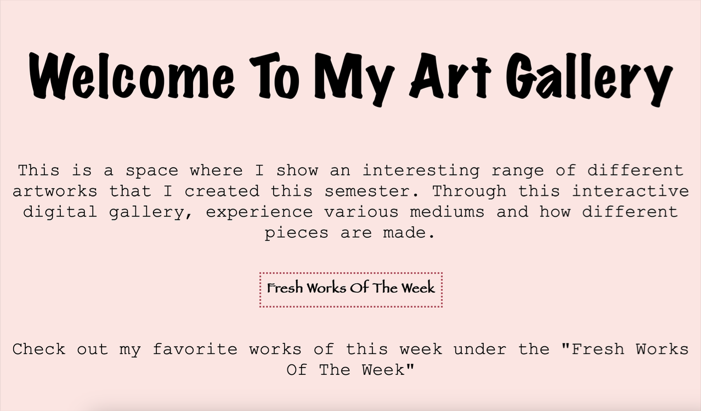

make a website and have a working link
Based on the feedback you receive, move forward with one direction. Using HTML only, create the first entry that responds to your collection. Explore the concept through typographic or interface supporting HTML elements (no images, videos, or sounds for this entry). Think through the hierarchy of your entry. What is the most important piece of information? How will you define that — with spacing, alignment, scale? Is everything of equal hierarchy? Be prepared to explain how hierarchy impacted your design decisions.
